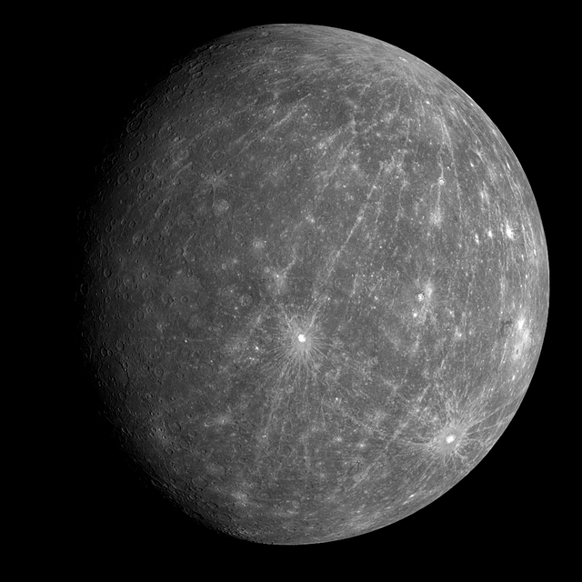

Sol
El sol es una estrella que forma parte central del sistema solar, dentro del cual se encuentra la tierra

Mercurio
Mercurio es el planeta del sistema solar más cercano al Sol y el más pequeño. Forma parte de los denominados planetas interiores.

Venus
El segundo planeta más próximo al Sol es, sin embargo el más cálido. Esto es debido a su densa atmósfera, que provoca un efecto invernadero, que captura el calor procedente del Sol.

Tierra
el planeta Tierra, es un planeta terrestre y rocoso. Tiene una superficie sólida y activa, con montañas, valles, cañones, llanuras y mucho más. La Tierra es especial porque es un planeta océano, ya que el agua cubre el 70% de su superficie